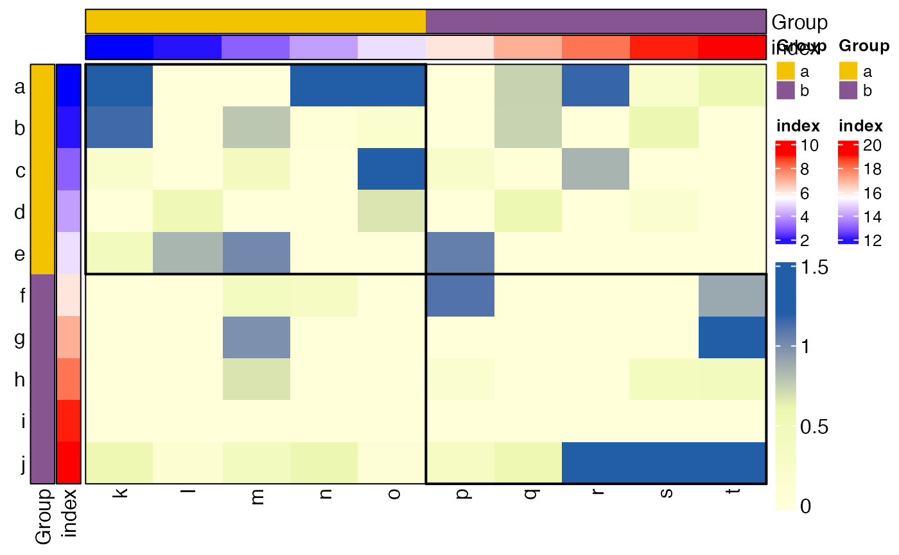

This function draw rectangle grids based on given row and column factors.
Examples
library(grid)
library(SpatialEcoTyper)
library(ComplexHeatmap)
dat = matrix(rnorm(100), 10)
rownames(dat) = letters[1:10]
colnames(dat) = letters[11:20]
rowann = data.frame(Group = rep(letters[1:2], each=5), index = 1:10)
colann = data.frame(Group = rep(letters[1:2], each=5), index = 11:20)
HeatmapView(dat, left_ann = rowann, top_ann = colann)
drawRectangleAnnotation(rowann$Group, colann$Group)
